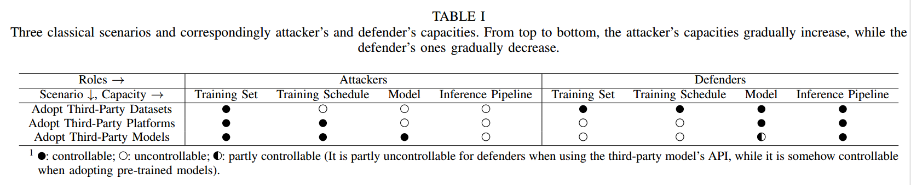

[TOC]
写在前面的话
看了CV三大会近两年的攻防关键词相关文章，都离不开backdoor关键词，为了彻底弄懂，决定读一下这篇文章。
0 Abstract
后门攻击旨在将隐藏的后门嵌入深度神经网络（DNNs）中，使得被攻击的模型在良性样本上表现良好，但如果隐藏的后门被攻击者指定的触发器激活时，其预测结果将被恶意改变。这种威胁可能发生在训练过程没有完全受控制的情况下，比如在第三方数据集上进行训练或采用第三方模型，这构成了一种新的、现实的威胁。
尽管后门学习是一个新兴而迅速发展的研究领域，但其系统性的调查仍然空白。本文首次对这一领域进行了全面的调查。我们根据其特征总结和分类了现有的后门攻击和防御方法，并提供了一个统一的框架来分析基于污染的后门攻击。此外，本文还分析了后门攻击与相关领域（如对抗性攻击和数据污染）之间的关系，并总结了广泛采用的基准数据集。
1 Introduction
DNNs的训练过程包括：数据采集、数据预处理、模型选择与构建、训练、模型保存、模型部署等，复杂的步骤为攻击者提供了更多攻击的机会。为了减小攻击成本，使用者偏向于使用第三方数据集而不是自己收集；倾向于在云上训练而不是在本地训练；倾向于使用第三方的backbone和预训练模型，这样无形中让训练过程无法被很好控制，增大了安全风险，后门攻击就是本文要讨论的一种训练阶段典型的攻击手段。
目前来说，污染训练样本是后门攻击采用的最广泛的方式。如下图所示，poisoned samples的右下角带有触发器，经过训练的DNN会被感染，它将被攻击的图像（即包含后门触发器的测试图像）识别为目标标签，同时仍然正确预测良性测试图像的标签。
除了直接对训练样本进行投毒外，还可以通过迁移学习、直接修改模型参数、以及添加额外的恶意模块来嵌入隐藏后门。换句话说，后门攻击可能发生在训练过程中涉及的各个步骤。
为了减轻后门威胁，已经提出了不同的防御措施。一般来说，这些方法可以分为两大类，包括经验后门防御和认证后门防御。
经验性后门防御
经验性后门防御是基于对现有攻击的一些观察或理解而提出的，并且在实践中具有良好的性能；然而，它们的有效性没有理论上的保证，并且可能会被一些自适应攻击绕过。这种方法是基于经验和实践，通过对训练数据进行审查、监控和过滤来识别和消除后门攻击。这种方法通常依赖于检测异常模式或特征，以识别潜在的后门模式。例如，可以通过检查训练数据集中的异常样本或模型输出的异常行为来发现后门攻击的痕迹。经验性后门防御方法的优势在于其实施简单，但缺点是可能无法捕获所有类型的后门攻击，并且可能会导致误报或漏报。
认证后门防御
相比之下，经过认证的后门防御的有效性在理论上是在某些假设下得到保证的，但在实践中其性能通常弱于经验防御，因为这些假设通常不被满足。如何更好地防御后门攻击仍然是一个重要的悬而未决的问题。
这种方法涉及对模型和数据进行数学验证，以确保模型在受到后门攻击时也能保持安全。认证后门防御方法通常基于形式化验证或数学证明，以确保模型在遇到攻击时仍然能够达到预期的安全性和性能水平。这种方法的优势在于其提供了更强的安全性保证，但缺点是实施和计算成本可能较高，并且可能会限制模型的灵活性和性能。
2 Preliminaries
2.1 Definition of Technical Terms
Benign model：在良性环境下训练的模型。Infected model：被后门攻击的模型。Poisoned sample：在训练过程中用于嵌入后门的被修改过的训练样本。Trigger：用于生成中毒样本并激活隐藏后门的触发器。Attacked sample：包含后门触发器的恶意测试样本。Attack scenario：可能发生后门攻击的场景。Source label：中毒或受攻击样本的真实标签。Target label：攻击者意图让所有被攻击的样本都被感染模型预测为目标标签。Attack success rate (ASR)：表示被感染模型成功预测为目标标签的受攻击样本的比例。Benign accuracy (BA)：表示受感染模型预测的良性测试样本的准确性。Capacity：定义了攻击者/防御者为了实现目标可以做什么和不能做什么。
下图里包含了一些术语的说明。
2.2 Classical Scenarios and Corresponding Capacities
以下是三种可能发生后门威胁的经典现实场景，以及相应的攻击者和防御者的capacity。更多细节总结在表一中并说明如下：
场景1：采用第三方数据集。在这种情况下，攻击者直接或通过互联网向用户提供中毒数据集。用户将采用中毒的数据集来训练他们的模型，然后进行部署。因此，攻击者只能操纵数据集，而无法修改模型、训练计划和推理管道。相比之下，在这种情况下，防守者可以操纵一切。例如，他们可以清理中毒的数据集以减轻后门威胁。
场景2：采用第三方平台。在这种情况下，用户将其良性数据集、模型结构和训练计划提供给不受信任的第三方平台（例如 Google Cloud）来训练其模型。尽管提供了良性数据集和训练计划，但攻击者（即恶意平台）可以在实际训练过程中修改它们。但是，攻击者无法更改模型结构，否则用户会注意到攻击。相反，防御者无法控制训练集和训练计划，但可以修改训练后的模型来减轻攻击。例如，他们可以在小型本地良性数据集上对其进行微调。
场景3：采用第三方模型。在这种情况下，攻击者通过API或互联网提供经过训练的受感染DNN。攻击者可以改变除inference pipeline之外的所有内容。例如，用户可以在预测之前对测试图像引入预处理模块，这是攻击者无法控制的。对于防御者来说，当提供源文件时，他们可以控制inference pipeline和模型；但是，如果他们只能访问模型API，则无法修改模型。
可以看到从场景1到场景3，攻击者的能力增加，而防御者的能力下降。换句话说，针对前一种场景设计的攻击也可能发生在后一种场景中：同样，为后一种的场景设计的防御也可以在前一种的场景中使用。

3 Poisoning-Based Backdoor Attacks
在过去的四年里，许多后门攻击被提出。在本节中，首先提出一个统一的框架，基于对攻击属性的理解，分析现有的针对图像分类的基于中毒的攻击。之后，根据提出的框架对现有的基于中毒的攻击进行了详细的总结和分类。最后还讨论了针对其他任务或范例的攻击以及后门攻击的积极应用。
3.1 A Unified Framework of Poisoning-based Attacks
基于投毒的后门攻击可以根据不同的属性相关标准进行分类，如图 3 所示并总结在表 II 中。细节如下：
分类器被定义为$f_{\boldsymbol{w}}: \mathcal{X} \rightarrow[0,1]^K$，$\boldsymbol{w}$是模型参数， $\mathcal{X} \subset \mathbb{R}^d$是实例空间，$\mathcal{Y}={1,2, \cdots, K}$是标签空间。$f(\boldsymbol{x})$ 表示相对于$K$个类别的后验向量，$C(\boldsymbol{x})=$ $\arg \max f_{\boldsymbol{w}}(\boldsymbol{x})$表示预测的标签。$G_{\boldsymbol{t}}: \mathcal{X} \rightarrow \mathcal{X}$ 表示攻击者指定的中毒图像生成器，具有触发模式$t$，$S: \mathcal{Y} \rightarrow \mathcal{Y}$ 是攻击者指定的标签转移函数。$ \mathcal{D} = {({x}_i, y_i)}_{i=1}^N $ 表示一个良性数据集，对于现有的后门攻击，涉及到$\mathcal{D}$的三个经典风险可以定义如下：
（1）标准风险$Rs$衡量被感染模型$C$是否能够正确预测良性样本
$$
R_s(\mathcal{D})=\mathbb{E}_{(\boldsymbol{x}, y) \sim \mathcal{P}_{\mathcal{D}}} \mathbb{I}{C(\boldsymbol{x}) \neq y}
$$
这个公式表示了标准风险（$R_s(\mathcal{D})$），其中$\mathcal{D}$是数据集，$(\boldsymbol{x}, y)$表示从数据分布$\mathcal{P} * {\mathcal{D}}$中采样得到的样本，$\mathbb{I}{C(\boldsymbol{x}) \neq y}$是一个指示函数，如果模型$C$对样本$\boldsymbol{x}$的预测结果与真实标签$y$不相符，则值为1，否则为0。$ \mathbb{E}*{(\boldsymbol{x}, y) \sim \mathcal{P} * {\mathcal{D}}} $表示对数据分布$\mathcal{P} * {\mathcal{D}}$进行期望，即对所有数据样本的指示函数值进行平均。
（2）后门风险$Rb$表示后门攻击者在预测被攻击样本时能否成功达到其恶意目的，即：
$$
R_b(\mathcal{D}) = \mathbb{E}_{(x, y) \sim \mathcal{P}_{\mathcal{D} } } \mathbb{I}{C(\boldsymbol{x} ^ {\prime} ) \neq S(y) }
$$
这个公式表示后门风险（$R_b(\mathcal{D})$），其中$\mathcal{D}$是数据集，$(\boldsymbol{x}, y)$是从$\mathcal{D}$中抽取的样本，$\mathcal{P}_{\mathcal{D}}$是数据集$\mathcal{D}$的分布，$\mathbb{I}$是指示函数，$C(\boldsymbol{x}^{\prime})$是在受到后门触发时模型$C$对被污染的样本$\boldsymbol{x}^{\prime}$的预测，$S(y)$是攻击者指定的标签偏移函数，用于将真实标签$y$转换为受影响的标签。后门风险测量的是当后门被激活时模型的预测与期望标签不匹配的概率。风险值越高代表后门攻击成功率越低。
（3）可感知风险$Rp$表示中毒样品是否可被检测（人或机器），即：
$$
R_p(\mathcal{D})=\mathbb{E}_{(\boldsymbol{x}, y) \sim \mathcal{P}_{\mathcal{D}}} D\left(\boldsymbol{x}^{\prime}\right)
$$
值越高，代表毒害越容易被检测出。
给定一个良性的训练集$Dt$，现有的基于中毒的后门攻击可以基于上述定义总结在一个统一的框架中，如下：
$$
\min _{\boldsymbol{t}, \boldsymbol{w}} R_s\left(\mathcal{D}_t-\mathcal{D}_s\right)+\lambda_1 \cdot R_b\left(\mathcal{D}_s\right)+\lambda_2 \cdot R_p\left(\mathcal{D}_s\right)
$$
其中$t \in \mathcal{T}, \lambda_1$和$\lambda_2$是两个非负权衡超参数，$\mathcal{D}_s$是$\mathcal{D}_t$的子集。$\frac{\left|\mathcal{D}_s\right|}{\left|\mathcal{D}_t\right|}$被称为中毒率。
注意，$I$由于是非可微的，所以实际情况下会替换成其他函数，比如交叉熵、KL 散度。另外，当参数取不同值的时候，就成为不同的攻击。
3.2 Evaluation Metrics
为了评估图像分类中后门攻击的性能，通常采用两种经典指标，包括良性准确性（BA）和攻击成功率（ASR）。BA和ASR越高，攻击效果越好。此外，中毒率以及良性图像与中毒图像之间的扰动越小，攻击就越隐蔽。
3.3 Attacks for Image and Video Classification
（1）BadNets：首次引入的深度学习中的后门攻击。具体而言，如图1所示，其训练过程包括两个主要部分，包括：通过将后门触发器印在选定的良性图像上来生成一些污染图像，以获得污染样本$(x’，yt)$，与攻击者指定的目标标签$yt$相关联；释放包含污染和良性样本的污染训练集供受害者训练其自己的模型。因此，训练的深度神经网络将被感染，在良性测试样本上表现良好，类似于仅使用良性样本训练的模型；然而，如果攻击图像中包含相同的触发器，则其预测将更改为目标标签。此攻击可能发生在2.2中描述的所有场景中，因此是一个严重的安全威胁。BadNets是可见攻击的代表，开启了这个领域的时代。几乎所有后续的基于污染的攻击都是基于这种方法进行的。
（2）隐形后门攻击：Chen等人首先讨论了基于中毒的后门攻击的隐形要求。他们建议，中毒图像与其良性图像相比应该无法区分，以避免人类察觉。为了满足这一要求，他们提出了一种混合策略，通过将后门触发器与良性图像混合来生成中毒图像，而不是通过标记（如BadNets中采用的那样）。此外，他们表明，即使采用小幅度的随机噪声作为后门触发器，仍然可以成功创建后门，这进一步降低了被检测到的风险。
不同的人根据不同的技术提出了不同的隐形攻击方案，同样面对的一个问题是如何平衡攻击的隐蔽性和有效性。
（3）优化后门攻击：触发器是中毒攻击的核心。因此，分析如何设计更好的触发器而不是简单地使用给定的未优化补丁具有重要意义并引起了一些关注。然而，优化的后门攻击通常泛化性较差，即过度拟合特定的模型结构或模型状态。尽管现有的工作引入了模型集成或精心设计了交替优化过程来缓解过度拟合，但如何更好地平衡优化触发器的有效性和泛化性仍然是一个重要的悬而未决的问题。
（4）语义后门攻击：是一种新型的后门攻击，与传统的非语义后门攻击不同，它假设后门触发器与良性图像的语义部分相关。攻击者可以通过在训练过程中，为具有特定特征的所有图像分配攻击者选择的标签来创建语义后门。例如，假设攻击者想要创建一个语义后门，使得一个被感染的深度神经网络在看到绿色的汽车时会被错误地分类为卡车。攻击者可以通过在训练集中将所有绿色汽车的标签改为“卡车”的方式来实现这一目标。这样，当感染后，在推理过程中如果输入图像中包含绿色汽车，网络就会自动将其错误分类为卡车，即使图像中没有任何数字空间的修改。。这样，被感染的深度神经网络，将会自动将包含预定义语义信息的测试图像错误地分类，而无需对图像进行任何修改。这种攻击方法的另一个变体是在图像中特定对象的组合可以激活隐藏的后门。由于这些攻击不需要在数字空间修改图像，因此它们更具恶意性，值得进一步探索。
（5）特定样本的后门攻击：目前，几乎所有后门攻击都是与样本无关的，即所有中毒样本都包含相同的触发模式。这样的特性广泛用于后门防御的设计。 Nguyen等人提出了第一个特定于样本的后门攻击，其中不同的中毒样本包含不同的触发模式。这次攻击绕过了许多现有的后门防御，因为它打破了防御的基本假设。然而，除了单独修改训练样本之外，它还需要控制训练损失，并且它们的触发因素仍然可见，这大大减少了它在现实世界应用中的威胁。此后，Li等人受到先进的基于DNN的图像隐写术的启发，提出了第一个具有不可见触发模式的仅毒药样本特定后门攻击。他们将触发模式嵌入到中毒图像的边缘结构中。由于这些攻击可以绕过大多数现有的后门防御，因此构成严重的安全威胁，值得进一步探索。
（6）物理后门攻击：与以往数字攻击完全在数字空间进行攻击不同，物理攻击在生成中毒样本时也涉及到物理空间。Chen 等人首先探索了这次攻击的情况，他们采用一副眼镜作为物理触发器来误导相机中开发的受感染的人脸识别系统。 Wenger等人还讨论了在物理世界中攻击人脸识别的进一步探索。其中采用便利贴作为攻击摄像头中部署的交通标志识别的触发器。最近，Li 等人证明，现有的数字攻击在物理世界中会失败，因为所涉及的变换（例如，旋转和收缩）改变了被攻击样本中触发器的位置和外观。这种不一致会大大降低后门攻击的性能。基于这种理解，他们提出了基于变换的攻击增强，使得增强后的攻击在物理世界中保持有效。这一尝试是在现实应用中成功实现后门攻击的重要一步。
（7）All-to-all后门攻击：根据目标标签的类型，现有的后门攻击可以分为两大类，包括all-to-one攻击和all-to-all攻击。具体来说，全对一攻击假设所有中毒样本都具有相同的目标标签，无论它们的真实标签是什么。相反，不同的中毒样本在all-to-all攻击中可能有不同的标签。例如，标签移位函数被指定为$S(y) = (y+ 1) mod K$。多对多攻击由于目标转移复杂，可以绕过许多面向目标的防御,因此与多对一攻击相比更加严重。然而，针对all-to-all攻击的研究却很少。如何更好地设计All-to-All攻击及其特性分析仍然是空白。
（8）黑盒后门攻击：与之前的白盒攻击不同，白盒攻击需要访问训练样本，而黑盒攻击则采用了训练集不可访问的设置。在实践中，由于隐私或版权问题，通常不会共享训练数据集，因此黑盒攻击比白盒攻击更现实。一般而言，黑盒后门攻击者首先生成一些替代性的训练样本。例如，在某些研究中，攻击者通过优化来自另一个数据集的图像，使得所选类别的预测置信度达到最大值，从而生成了每个类别的一些代表性图像。有了这些替代性的训练样本，就可以采用白盒攻击来注入后门。黑盒后门攻击比白盒攻击更为困难，而且在这个领域的研究工作也相对较少。
4 Non-Poisoning-Based Backdoor Attacks
除了基于中毒的后门攻击之外，最近的文献还提出了一些基于非中毒的后门攻击。这些方法并不是直接基于训练过程的数据中毒。例如，攻击者可以直接改变模型权重甚至模型结构，而无需经过训练过程。它们的存在表明后门攻击也可能发生在其他阶段（例如部署阶段），而不仅仅是数据收集或训练阶段。
4.1 Weights-oriented Backdoor Attacks
在面向权重的后门攻击中，攻击者直接修改模型参数，而不是通过中毒样本进行训练。Dumford等人提出了第一个面向权重的攻击，他们在模型中采用了贪心搜索，并对预训练模型的权重应用了不同的扰动。之后的一些想法包括翻转了内存中存储的权重的关键位，对良性模型的模型参数添加对抗性扰动等。
与之前的方法不同，其中后门直接嵌入在参数中，Guo等人提出了TrojanNet，通过秘密的权重排列在被感染的深度神经网络中编码后门，并激活它。具体来说，训练TrojanNet类似于多任务学习，尽管良性任务和恶意任务没有共同的特征。此外，作者还证明了决定模型是否包含触发隐藏后门的排列的决策问题是NP完全的，因此几乎不可能检测到后门。
4.2 Structure-modified Backdoor Attacks
结构修改后门攻击通过改变良性模型的结构将隐藏的后门注入到良性模型中。
这些攻击可能在使用第三方模型或部署阶段发生。Tang 等人提出了第一个结构修改攻击，他们将经过训练的恶意后门模块（即子DNN）插入到目标模型中以嵌入隐藏的后门。这种攻击简单而有效，并且恶意模块可以与所有DNN结合另外的还包括将恶意条件逻辑嵌入到目标DNN中，直接替换而不是添加良性模型的狭窄子网来进行后门攻击等。
5 Connection With Related Realms
5.1 Backdoor Attacks and Adversarial Attacks
对抗性攻击和后门攻击都会修改良性测试样本，使模型在推理过程中出错。但是它们还是存在本质的区别：（1）从攻击者的能力来看，对抗性攻击者需要（在一定程度上）控制推理过程，而不是模型的训练过程。具体来说，他们需要多次查询模型结果甚至梯度，以通过给定固定目标模型的优化来生成对抗性扰动。相比之下，后门攻击者需要修改一些训练阶段（例如：数据收集、模型训练），而在推理过程中没有任何额外要求。 （2）从被攻击样本的角度来看，后门攻击者已知（即未优化）扰动，而对抗攻击者需要通过基于模型输出的优化过程来获得扰动。
最近，还有一些研究对抗性攻击和后门攻击之间潜在联系的作品。例如，Weng等人凭经验证明，通过对抗性训练防御对抗性攻击可能会增加后门攻击的风险。
6 Backdoor Defenses
为了减轻后门威胁，提出了几种后门防御措施。现有的方法主要针对基于中毒的攻击，可以分为两大类，包括经验后门防御和认证后门防御。具体来说，经验防御是基于对现有攻击的一些理解而提出的，并且在实践中表现良好，但其有效性没有理论上的保证。相比之下，经过认证的后门防御的有效性在一定的假设下在理论上得到保证，但在实践中通常弱于经验防御。目前，经过认证的防御都是基于随机平滑，而经验防御则有多种类型的方法。
6.1 经验后门防御
直观上，基于中毒的后门攻击类似于用相应的钥匙打开门。换句话说，要确保后门攻击成功，有三个不可或缺的要求，包括（1）（被感染的）模型中存在隐藏后门，（2）（被攻击的）样本中包含触发器，（3）触发器和后门匹配，如图5所示。
因此，可以采用三种主要防御范式来防御现有攻击，包括（1）触发器和后门不匹配（2）后门消除（3）触发器消除。针对上述范式提出了不同类型的方法，这些方法总结在表四中，具体说明如下：
（1）基于预处理的防御：这些方法在将样本输入DNN之前引入预处理模块，以更改受攻击样本中包含的触发模式。因此，修改后的触发器不再与隐藏的后门匹配，从而阻止后门激活。
（2）基于模型重建的防御：与基于预处理的防御不同，基于模型重建的方法旨在通过直接修改可疑模型来消除受感染模型中隐藏的后门。因此，即使触发器包含在受攻击的样本中，重建的模型仍然会正确地预测它们，因为隐藏的后门已经被删除。
（3）基于触发器合成的防御：除了直接消除隐藏后门外，基于触发器合成的防御首先合成后门触发器，然后是第二阶段，通过抑制触发器的效果来消除隐藏后门。这些防御措施与第二阶段基于重建的防御措施有一定的相似之处。例如，修剪和再训练是消除两种类型的防御中隐藏的后门的常用技术。
（4）基于模型诊断的防御：这些防御根据预先训练的元分类器来证明可疑模型是否被感染，并拒绝部署受感染的模型。由于只使用良性模型进行部署，自然消除了隐藏的后门。
（5）基于训练样本过滤的防御：这些防御旨在从训练数据集中过滤中毒样本。经过过滤处理后，训练过程中只会使用良性样本或纯化的中毒样本，从源头上杜绝了后门的产生。
（6）测试基于样本过滤的防御：这些防御也会过滤恶意样本，但过滤发生在推理而不是训练过程中。部署的模型只会预测良性测试或纯化的攻击样本。这些防御措施可以防止后门激活，因为它们可以删除触发模式。
6.2 认证后门防御
尽管已经提出了多种经验防御方法，并且针对某些后门攻击取得了不错的性能，但几乎所有这些防御方法都被一些自适应攻击所绕过。为了终止这种“猫捉老鼠的游戏”，Wang等人迈出了基于随机平滑技术的后门攻击认证防御的第一步。随机平滑最初是为了证明对抗性示例的鲁棒性而开发的，其中平滑函数是通过向数据向量添加随机噪声从基函数构建的，以证明分类器在某些条件下的鲁棒性。
7 Outlook of future directions
后门学习的文献中已经提出了许多工作，涵盖了多个分支和不同的场景。然而，我们认为该领域的发展仍处于起步阶段，因为后门学习的许多关键问题尚未得到很好的研究。在本节中，提出了五个潜在的研究方向，以启发后门学习的未来发展。
7.1 触发器设计
毒化型后门攻击的有效性和效率与其触发模式密切相关。然而，大多数现有攻击的触发器设计是以经验法（例如，使用通用扰动）甚至是非优化方式进行的。如何更好地优化触发模式仍然是一个重要的未解决问题。此外，在触发器设计中仅考虑了效果和触发器的隐形性。其他标准，如最小毒化率和触发器的泛化性，也值得进一步探索。
7.2 语义和物理后门攻击
语义和物理攻击在实际场景中对AI系统构成更严重的威胁，但与其他类型的后门攻击相比，它们的研究远远落后。进行更彻底的研究以更好地了解这些攻击将是减轻实践中后门威胁的重要步骤。
7.3 对于其他任务的攻击
后门攻击的成功很大程度上取决于根据目标任务的特点进行具体的触发设计。例如，触发器的视觉隐形是视觉任务中的关键标准之一，它确保了隐秘性。
然而，不同任务中后门触发器的设计可能会有很大不同（例如，在攻击NLP相关任务时将触发器隐藏到句子中与将触发器隐藏到图像中完全不同）。因此，有必要研究特定任务的后门攻击。目前，现有的后门攻击主要集中在计算机视觉任务，特别是图像分类上。针对其他任务（例如推荐系统、语音识别和自然语言处理）的研究还没有得到很好的研究。
7.4有效且高效的防御
尽管已经提出了许多类型的经验后门防御（如第六节所示），但几乎所有类型的后门防御都可以被后续的自适应攻击绕过。此外，除了基于预处理的防御之外，现有的防御通常都面临着较高的计算成本。应更多地努力设计有效且高效的防御措施（例如，分析现有攻击的弱点以及如何降低防御的计算成本），以跟上后门攻击的快速发展。此外，如何设计黑盒防御也值得更多关注，因为这些方法在现实中更实用。此外，经过认证的后门防御很重要，但目前研究很少，值得更多探索。
7.5 机制探索
后门生成原理和后门触发器的激活机制是后门学习中的圣杯问题。例如，为什么可以创建隐藏的后门以及当触发器出现时受感染模型内部会发生什么，在现有的工作中尚未得到仔细研究。更深入地了解后门攻击的内在机制可以指导更有效的攻击和防御的设计以及对DNN行为的理解。
8 Conclusion
后门学习，包括后门攻击和后门防御，是一个重要且蓬勃发展的研究领域。在本次调查中，对现有的后门攻击进行了总结和分类，并提出了分析基于投毒的后门攻击的统一框架。本文还讨论了后门攻击与相关研究领域之间的关系，并分析了现有的防御措施。最后说明了潜在的研究方向。
该领域的几乎所有研究都是在过去四年内完成的，攻击和防御之间的猫鼠游戏未来可能会继续下去。本文希望这项调查能够提醒研究人员注意后门威胁并提供及时的看法。这将是构建更强大、更安全的深度学习方法的重要一步。
名词解释
污染训练样本
“污染训练样本”指的是在机器学习或深度学习中，通过操纵、篡改或注入恶意信息来改变训练数据的过程。这种恶意操作旨在误导模型，使其在遇到特定条件或触发器时产生不正确的预测结果。污染训练样本可能会导致模型出现过拟合、泛化能力下降以及对特定输入的敏感性增加等问题。在一些情况下，这种攻击也被称为“数据污染”。
多任务学习
多任务学习（Multi-Task Learning，MTL）是一种机器学习范式，旨在通过同时学习多个相关任务来提高整体性能。在多任务学习中，模型被设计为同时处理多个任务，而不是单独训练多个独立的模型来处理每个任务。
良性任务和恶性任务是指多任务学习中的两种不同类型的任务。在这种上下文中，"良性"指的是正常的、期望的任务，而"恶性"则指的是恶意的、非法的任务。在TrojanNet中，良性任务是指模型需要完成的正常任务，而恶性任务则是指嵌入了后门的任务，用于激活隐藏的后门。这两个任务共享模型的参数，但它们的目标和特性可能完全不同。
NP完全
NP完全（NP-Complete）是理论计算机科学中的一个重要概念，指的是一类问题，它们满足两个条件：首先，它们属于NP类，即可以在多项式时间内验证给定解是否正确；其次，它们是NP难问题的特殊情况，即所有NP问题都可以在多项式时间内归约到它们。
NP完全问题是理论计算机科学中最困难的问题之一，尚未找到多项式时间内的有效算法来解决它们。如果能够找到一个多项式时间算法解决了任何一个NP完全问题，那么所有NP问题都可以在多项式时间内解决，这将意味着P = NP，这是一个尚未被证明或证伪的著名问题。
除了NP完全，还有其他一些复杂度类别，如下所示：
- P（Polynomial Time）：表示可以在多项式时间内解决的问题。即存在一个多项式时间的算法来解决该问题。
- NP（Nondeterministic Polynomial Time）：表示可以在多项式时间内验证解的问题。即给定一个解，可以在多项式时间内验证它是否正确。
- NP难（NP-Hard）：指的是至少和NP完全问题一样难以解决的问题。虽然NP难问题本身不一定是NP问题，但它们具有类似的困难程度。
随机平滑
随机平滑（Random smoothing）是一种在深度学习模型中用于提高鲁棒性的技术。该技术的基本思想是通过对输入数据进行随机扰动或变换来生成一系列微小但合理的扰动，以此来改善模型对于输入的波动性和噪声的容忍度，从而提高模型的鲁棒性和泛化能力。
具体来说，随机平滑的过程通常包括以下几个步骤：
- 扰动输入数据： 随机平滑通过对输入数据进行微小的随机扰动，例如添加轻微的噪声、进行微小的旋转、缩放或平移等，以产生与原始输入略微不同但在语义上相似的新数据。
- 模型预测： 对扰动后的输入数据进行模型预测，得到模型对于这些微调后数据的预测结果。
- 融合预测结果： 将模型对多个扰动数据的预测结果进行融合或平均，以获得最终的预测结果。